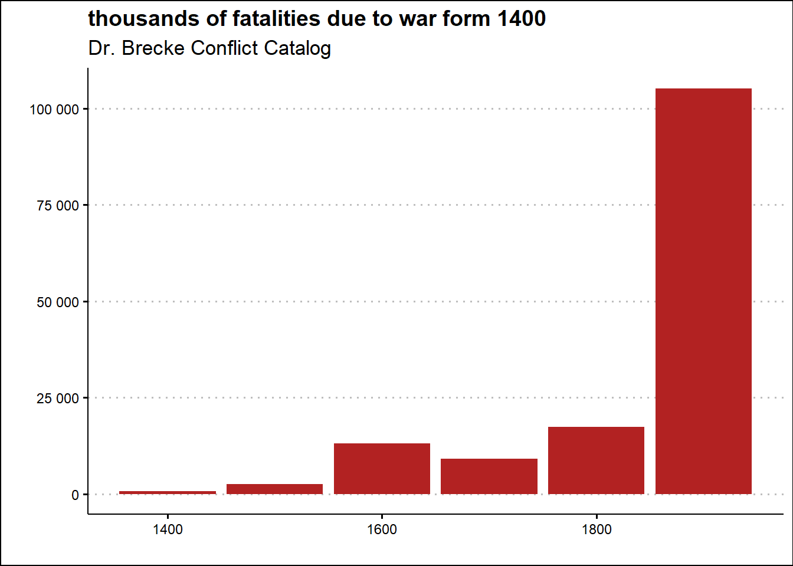

1 War Trends
“You can’t say civilization don’t advance… in every war they kill you in a new way.”
Will Rogers, American actor
The analysis of historical data on the war has already been recently attempted with conflicting results.
According to Steven Pinker (2012), violence has been in decline for long periods of time and we may be living in the most peaceful period of the existence of our species. Pinker explains this decline by indicating some historical processes that lead to progress in political, social and civil organization. A 2016 article by Taleb and Cirillo (2016), titled “The Decline of Violent Conflicts: What Do The Data Really Say?” , argued on the contrary that our current peaceful era is a statistical myth due to the variability inherent in the phenomenon called war. The 2016 article lists 5 major issues in quantitative historiography: fat tails, boundedness, reliability of historical data, definition of a war event and units for the analysis.
The data sources used in the chapter highlight in particular problems of reliability and relative coherence of historical data also in relation to the different historiographical criteria for defining a war event.
For these reasons, the chapter does not venture into a quantitative analysis and don’t try to resolve the aforementioned conflicting positions, but simply proceed by exploring some public data concerning the history of warfare and military spending in the contemporary age.
This exploratory analysis of the data will confirm a few simple and trivial observations about the war:
war is a constant in the history of humanity;
war has always produced death and destruction;
there is no country that does not think at least of its own defense, if not to prepare for a possible war.
1.1 wars in history
In this section three public datasets were used to conduct a simple exploratory data analysis about wars in history:
list of wars from the Encyclopedia Britannica;
Conflict Catalog Data made available by Dr. Peter Brecke;
wikipedia list of wars.
According to the list of wars published by the Encyclopedia Britannica, it is possible to count 137 wars from the 12th century BC until the beginning of the twenty-first century.
The list begins with the legendary conflict between the early Greeks and the Trojan people in western Anatolia celebrated in Homer’s Iliad and Odyssey and concludes by reporting the uprising in Syria that began in 2011 and ended in 2020 with a ceasefire.
While this list is not exhaustive, the distribution over history centuries of wars summarized in the graph below shows that the last three centuries of history are the most warlike.
In 20th century the list includes 37 wars:
Acehnese War (1873–1904), Philippine-American War (1899–1902), South African War (1899–1902), The War of a Thousand Days (1899–1903), Boxer Rebellion (1900–01), Moro Wars (1901–13), Russo-Japanese War (1904–05), Pig War (1906–09), Mexican Revolution (1910–20), Italo-Turkish War (1911–12), World War I (1914–18), Baltic War of Liberation (1918–20), Russian Civil War (1918–20), Russo-Polish War (1919–20), Rif War (1921–26), Chaco War (1932–35), Italo-Ethiopian War (1935–36), Spanish Civil War (1936–39), Sino-Japanese War (1937–45), Phony War (1939–40; no actual hostilities), Russo-Finnish War (1939–40), World War II (1939–45), Greek Civil War (1944–45; 1946–49), Arab-Israeli wars (1948–49; 1956; 1967; 1973; 1982), Korean War (1950–53), Algerian War (1954–62), Vietnam War (1954–75), Six-Day War (1967), War of Attrition (1969–70), Yom Kippur War (1973), Dirty War (1976–83), Afghan War (1978–92), Iran-Iraq War (1980–88), Falkland Islands War (1982), Persian Gulf War (1990–91), Bosnian conflict (1992–95), Kosovo conflict (1998–99)The 36 wars in 19th century are the following:
Cape Frontier Wars (1779–1879), French revolutionary wars (1792–1801), War of the Oranges (1801), Tripolitan War (1801–05), Second Maratha War (1803–05), Third Maratha War (1817–18), Napoleonic Wars (1803–15), Black War (1804–30), Peninsular War (1808–14), War of 1812 (1812–15), Creek War (1813–14), War of Greek Independence (1821–32), Padri War (1821–37), Naning War (1831–32), Pastry War (1838–39), Mexican-American War (1846–48), Crimean War (1853–56), Bleeding Kansas (1854–59), American Civil War (1861–65), War of the Triple Alliance (1864/65–70), Seven Weeks’ War (1866), Selangor Civil War (1867–73), Franco-German War (1870–71), Acehnese War (1873–1904), Red River Indian War (1874–75), Serbo-Turkish War (1876–78), Anglo-Zulu War (1879), War of the Pacific (1879–83), Gun War (1880–81), Sino-French War (1883–85), Serbo-Bulgarian War (1885–86), Sino-Japanese War (1894–95), Spanish-American War (1898), Philippine-American War (1899–1902), South African War (1899–1902), The War of a Thousand Days (1899–1903)In 18th century the list of wars counts the following 21 wars:
Cape Frontier Wars (1779–1879), French revolutionary wars (1792–1801), War of the Oranges (1801), Tripolitan War (1801–05), Second Maratha War (1803–05), Third Maratha War (1817–18), Napoleonic Wars (1803–15), Black War (1804–30), Peninsular War (1808–14), War of 1812 (1812–15), Creek War (1813–14), War of Greek Independence (1821–32), Padri War (1821–37), Naning War (1831–32), Pastry War (1838–39), Mexican-American War (1846–48), Crimean War (1853–56), Bleeding Kansas (1854–59), American Civil War (1861–65), War of the Triple Alliance (1864/65–70), Seven Weeks’ War (1866), Selangor Civil War (1867–73), Franco-German War (1870–71), Acehnese War (1873–1904), Red River Indian War (1874–75), Serbo-Turkish War (1876–78), Anglo-Zulu War (1879), War of the Pacific (1879–83), Gun War (1880–81), Sino-French War (1883–85), Serbo-Bulgarian War (1885–86), Sino-Japanese War (1894–95), Spanish-American War (1898), Philippine-American War (1899–1902), South African War (1899–1902), The War of a Thousand Days (1899–1903)Exploring the Conflict Catalog Data made available by Peter Brecke of the Georgia Institute of Technology, it is possible to highlight also how much blood has been shed in history because of wars.

Considering these data, the twentieth century counts more than 100 million victims of war, more than five times the previous century.
The most bloody conflicts according to the dataset are reported in the table below.
| name | total_fatalities | start_year | end_year |
|---|---|---|---|
| Japan, Germany-US,USSR,Britain, China,others, 1937-45 | 40409000 | 1937 | 1945 |
| First World War, 1914-18 | 19617000 | 1914 | 1918 |
| Thirty Years' War, 1618-48 | 8000000 | 1618 | 1648 |
| Germany (massacre of Jews), 1941-42 G | 6000000 | 1941 | 1942 |
| Napoleonic Wars, 1803-15 | 4425000 | 1803 | 1815 |
| China, 1850-65 | 2000000 | 1850 | 1865 |
| Spain (with intervention by Germany, Italy), 1936-39 | 2000000 | 1936 | 1939 |
| Japan-China, 1937-45 | 2000000 | 1937 | 1945 |
| Wars of the French Revolution, 1791-1802 | 1915000 | 1791 | 1802 |
| China, 1950-51 G | 1900000 | 1950 | 1951 |
| Cambodia, 1975-79 G | 1900000 | 1975 | 1979 |
The world wars of the 20th century are the bloodiest conflicts in history according to the Conflict Data Catalog. The relative total casualties are due to the increase in weapon power and the number of countries involved. Dr. Peter Brecke counts six million Jewish victims as an event other than World War II. The massacre of the Jews, also called the Holocaust or Shoah, alone ranks fourth among the bloodiest wars.
The Thirty Years’ War, which ranks third, was one of the most destructive conflicts in European history, lasting from 1618 to 1648. Fought mainly in central Europe, it is estimated to have produced between 4.5 and 8 million of soldiers and civilians who died in battles, famine and disease. Some areas of what is now modern Germany experienced population declines of more than 50%.
The longest conflicts in history from year 1400 according to the Conflict Catalog are reported in the following table.
| name | duration | start_year | end_year |
|---|---|---|---|
| Netherlands-Spain, 1566-1609 | 43 | 1566 | 1609 |
| Siam (revolution), 1647-88 | 41 | 1647 | 1688 |
| Dahomey-tribes, 1818-58 | 40 | 1818 | 1858 |
| China (Qing)-Mongolia (Mongolia), 1594-1632 | 38 | 1594 | 1632 |
| Russia-Crimean Tartars, 1540-72 | 32 | 1540 | 1572 |
| Denmark-Holstein, Hanse towns (from 1426), 1404-35 | 31 | 1404 | 1435 |
| Vietnam (peasant rebellion), 1771-1802 | 31 | 1771 | 1802 |
| England (dynastic, nobles), 1455-85 | 30 | 1455 | 1485 |
| Thirty Years' War, 1618-48 | 30 | 1618 | 1648 |
| United Provinces-Java, 1650-80 | 30 | 1650 | 1680 |
| Sumatra (Malays vs. Padris), 1807-37 | 30 | 1807 | 1837 |
| Ethiopia (Eritrea) (with Cuban intervention), 1961-91 | 30 | 1961 | 1991 |
The first longest war reported, called Dutch Revolt (Dutch: Nederlandse Opstand), lasted 43 years. It was an armed conflict in which Dutch Republic, England, and France fouught against Spanish Empire
The second one, with a duration of 41 years, is the Siam revolution leading to the ban of french influence from the country and an internal political change.
The third position relates to a long war, 40 years, waged by the kingdom of Dahomey in Africa against neighboring tribes to sell the defeated enemies as slaves to Western slave traders.
In order to check the preceding data sources, the Wikipedia page List of wars by death toll has been scraped.
This wiki page lists 23 ancient wars, 13 medieval wars, and 153 modern wars with over 25,000 casualties.
Plotting a similar graph to the one made for the Conflict Catalog Data for the wiki list of wars, it is clear that the data is different in terms of wars and of casualties reported.

According to wiki list of wars page in 19th century, the war death toll is around 180 millions fatalities.
The most bloody wars, according to Wikipedia and reported in the table below, does not match with the data about wars provided by Peter Brecke.
| war | combatants | date | deathrange |
|---|---|---|---|
| World War II | Allied powers vs. Axis Powers | 1939–1945 | 80000000 |
| Taiping Rebellion | Qing China vs. Taiping Heavenly Kingdom | 1850–1864 | 20000000–70000000 |
| Three Kingdoms War | Wei vs. Shu vs. Wu | 184–280 | 36000000–40000000 |
| Mongol invasions and conquests | Mongol Empire vs. Several Eurasian states | 1206–1368 | 30000000–40000000 |
| World War I | Allied Powers vs. Central Powers | 1914–1918 | 16000000–40000000 |
| Transition from Ming to Qing | Qing China vs. Ming China vs. Shun dynasty China (Li Zicheng) vs. Xi dynasty China (Zhang Xianzhong vs. Kingdom of Shu (She-An Rebellion) vs. Evenk-Daur federation (Bombogor) | 1616–1683 | 25000000 |
| An Lushan Rebellion | Tang dynasty China and Islamic Empire vs. Yan state | 755–763 | 13000000–36000000 |
| Spanish conquest of the Aztec Empire | Spanish Empire vs. Aztec Empire | 1519–1632 | 24300000 |
| Second Sino-Japanese War | Republic of China and allies vs. Japan | 1937–1945 | 20000000–25000000 |
| Conquests of Timur | Timurid Empire vs. several middle eastern states | 1370–1405 | 8000000–20000000 |
| Dungan Revolt | Qing China vs. Hui vs. Kashgaria | 1862–1877 | 8000000–20000000 |
The first war in this infamous ranking is still World War II but the death toll reported is doubled reaching 80 millions of fatalities.
The second and third positions are covered by two wars that took place in China at different times.
The Taiping Rebellion was a revolt lasting from 1850 to 1864 against the Qing dynasty in China supported by religious beliefs and motivated by harsh economic conditions. The Taiping forces were run as a cult-like group called the God Worshiping Society by self-proclaimed prophet Hong Xiuquan. The rebels held the city of Nanjing for a decade. However, the Taiping Rebellion ultimately failed and led to the deaths of over 20 million people.
The War of the Three Kingdoms was a period of conflict between the Wei, Shu, and Wu kingdoms of ancient China that lasted nearly a hundred years starting in 184 after the fall of the Han empire. It was celebrated in the famous novel Romance of the Three Kingdoms.
Also the war ranking by duration extracted from Wikipedia is different from the top ten coming from the Conflict Catalog data.
| war | combatants | date | duration |
|---|---|---|---|
| Reconquista | Spanish and Portuguese Christian states vs. Spanish and Portuguese Muslim states | 711–1492 | 781 |
| Arab–Byzantine Wars | Byzantine Empire and allies vs. Islamic Empire and allies | 629–1050 | 421 |
| Chinese Warring States | Seven great powers of China | c. 475 BC - 221 BC | 254 |
| Arauco War | Spanish Empire vs. Mapuches | 1550–1790 | 240 |
| Crusades | Originally Byzantine Empire vs. Seljuq Empire, but evolved into Christians vs. Muslims. | 1095–1291 | 196 |
| Mongol invasions and conquests | Mongol Empire vs. Several Eurasian states | 1206–1368 | 162 |
| Wars of the Sixteen Kingdoms | Northern Chinese States | 304–439 | 135 |
| Punic Wars | Roman Republic vs. Carthaginian Empire | 264 BC–146 BC | 118 |
| Hundred Years' War | House of Valois vs. House of Plantagenet | 1337–1453 | 116 |
| Spanish conquest of the Aztec Empire | Spanish Empire vs. Aztec Empire | 1519–1632 | 113 |
The Reconquista, the war to drive the Moors out of Spain and Portugal, lasted nearly eight centuries while four centuries of conflict pitted the Byzantine Empire against the Islamic Empire in a series of wars.
The Warring States Period was an era in ancient Chinese history characterized by warfare that lasted two and a half centuries.
Following the analysis of these three sources of data, recognizing their relative inconsistency, the first two simple conclusions relating to war are confirmed: war has always been present in the history of humanity regardless of the geographical region and has always produced a certain number of victims .
1.2 military expenditure
In order to validate the claim that all countries in the world spend on their own defense, the SIPRI military spending database was explored.
The Stockholm International Peace Research Institute, SIPRI, is an independent international institute dedicated to research on conflict, armaments, arms control and disarmament and maintains a data set called SIPRI-Milex-data containing information on military spending worldwide over the last years.
Specifically, the analysis is focused on the following three datasets:
Regional totals, reporting military spending by continental region in billion dollars from 1988 to 2022 at constant 2021 prices and exchange rates, except for the last figure which is reported at 2022 prices and exchange rates;
Constant (2021) US$, which reports military spending by country in million dollars from 1988 to 2022 at constant 2021 prices and exchange rates;
Share of Govt. expenditure, reporting military expenditure expressed as a percentage of public administration expenditure.
Using the second and third dataset, Constant (2021) US$ and Share of Govt. expenditure, the two histograms below show the distribution of national military spending in 2022 both as an absolute value in dollars (on a logarithmic scale) and as a share of total public spending.


On average the military expenditure all over the world according to SIPRI has been of 13949 million dollars and in share of government spending of 6.41%.
But interesting things happen at extremes.
Observing the graph of the distribution of spending in dollars, it can be seen that the values of China, about 298 billion dollars, and the United States, about 811 billion dollars, seem real outliers, values outside the distribution valid for the other countries considering a,lso that the histogram is in log scale. At the other extreme, Costa Rica, Iceland and Panama has no military expenditure reported while Venezuela spent 4.7 million dollars.
Considering instead the military expenditures as a ratio of the overall government expenditure, the values that seems not in the same distribution of other countries are related to: Somalia (20.37%), Qatar (23.84%), Saudi Arabia (27.79%) and Belarus (32.12%).
At the lower extreme, in 2022 only Haiti, Honduras, Mauritius, Moldova spent less than 1% of the overall government spending.
Exploring the regional totals dataset, it is possible to highlight that in last 20 years the military expenditure has grown all over the world.


In just over twenty years, global military spending has grown from about \(1,200\) billion dollars to about $2,182 billion dollars. Impressive isn’t it?
The region that has spent the most is America led by the United States: its military spending trend stalled in the years around 2010 to decrease slightly until 2016 and then recover from 2017 to 2022. Asia shows a clear constant growth trend of military spending. Europe has maintained consistently high military spending, which appears to be growing fastest in recent years. After an initial period of growth, since around 2015 the Middle East appears to have stabilized its military spending. Africa cannot economically afford a high expense.
In order to detect not only for the presence of a growing trend but also for a pattern of arms race, two geopolitical scenarios were analyzed: the major world powers and the Middle East.
The arms race pattern is defined as the competitive acquisition of military capabilities between two or more nations although in a broad sense it can be understood as a growing trend.
The first analysis concerns some countries among the world powers: China, India, Russia and the United States of America. For each country, military spending from year 2000 to 2022 was traced over time both in absolute value, using Constant (2021) US$ datase, and as a share of government spending using the data from Share of Govt. expenditure dataset.


The United States spends an incomparable amount of resources on armaments compared to other world powers. As reported in the SIPRI database, US maximum spending was approximately 917 billion dollars in 2010 compared to China’s 298 in 2022, Russia’s 77 in 2016 and India’s 81 in 2022. The US government’s considerable spending on arms does not appear to be a direct reaction to spending by other nations. Instead, it could be a phenomenon due both to the events linked to the consequences of 11 September 2001 and to the weight and importance of the US military apparatus.
In the SIPRI data on military spending in relation to total government spending, data from the United States of America is missing, so no clear pattern of arms race can be detected. China’s military spending effort has been declining for the past two decades, India’s appears to be declining slightly while Russia’s effort peaks around 2016. In 2022 Russia spent 10.35% of its global government spending, China 4.79% and India 8.26%.
The second analysis concerns some Middle Eastern countries with different political and economic characteristics, namely Saudi Arabia, Egypt, Iran, Israel and Lebanon. As for the world powers, the graphs of the trend of military spending from year 2000 to 2022 are presented both in billions of dollars and as a share of overall government spending.


Over the last twenty years, Saudi Arabia has spent between 22 and 32% of its global spending on armaments, reaching an expenditure of even more than 94 billion dollars in 2015. The military spending high ratio in Saudi Arabia has been possible since the government is a kingdom without relevant economical and political constraint.
Israel, which is continually threatened by neighboring countries, has in the last twenty years limited its military expenditure to within 15% of global spending, spending slightly more than 23 billion dollars in 2022. Egypt has steadily decreased its military spending effort starting from about 10% till slightly more than 4% of its overall spending while the spending in dollars remains almost constant reaching 5 billion dollars in 2022.
Iran military spending during last years has from 13 to 17% in 2022. In absolute value last year Iran spent 5,639.7 million dollars. Lebanon growing trend in military expenditure has been cut off in 2019 due to its economic crisis.
1.3 key takeways
As the first principle of data science states, data without context is information, not knowledge. Likewise, facts are not history unless they are organized in their context and over time in a way that can be explained.
In this sense, the synthetic analysis carried out on historical data is very lacking, but nevertheless allows for some general considerations.
Given the differences between the datasets of wars in history analyzed, it is difficult to draw specific conclusions about any historical trends. But it can certainly be said that the history of every region of the world can tell how much destruction and death wars have caused. The twentieth century certainly seems to be the bloodiest among centuries probably for two reasons: the availability of more accurate historical data and the unthinkable growth in the power of weapons.
The analysis of the expenditure of modern states on armaments indicates that the possibility of getting involved in war is perceived as real. The amount of arms spending does not appear to follow an arms race pattern in the strict sense in the proposed scenarios, probably due to numerous domestic economic and political constraints. But the global growth in military spending over the past two decades is astounding.
computation with R
In order to learn how to explore data with R see Hadley Wickham, Grolemund, and Centinkaya-Rundel (2023).
For this chapter the following R packages have been used:
rvest by Hadley (rvest) Wickham (2022) for scraping both wikipedia and Encyclopedia Britanica list of wars;
purrr by Hadley Wickham and Henry (2023) for applying functions to data;
readxl by Hadley Wickham and Bryan (2023) for loading into R the Conflict Catalog Data in excel format;
janitor by Firke (2023) for data cleaning;
dplyr by Hadley Wickham et al. (2023) and tidyr by Hadley Wickham, Vaughan, and Girlich (2023) for data manipulation;
stringr by Hadley (stringr) Wickham (2022) for processing text data;
kableExtra by Hao Zhu (2021) for visualizing tables;
ggplot2 by Hadley Wickham (2016), ggthemes by Arnold (2021), ggrepel by Slowikowski (2023) and scales by Hadley Wickham and Seidel (2022) for infographics.